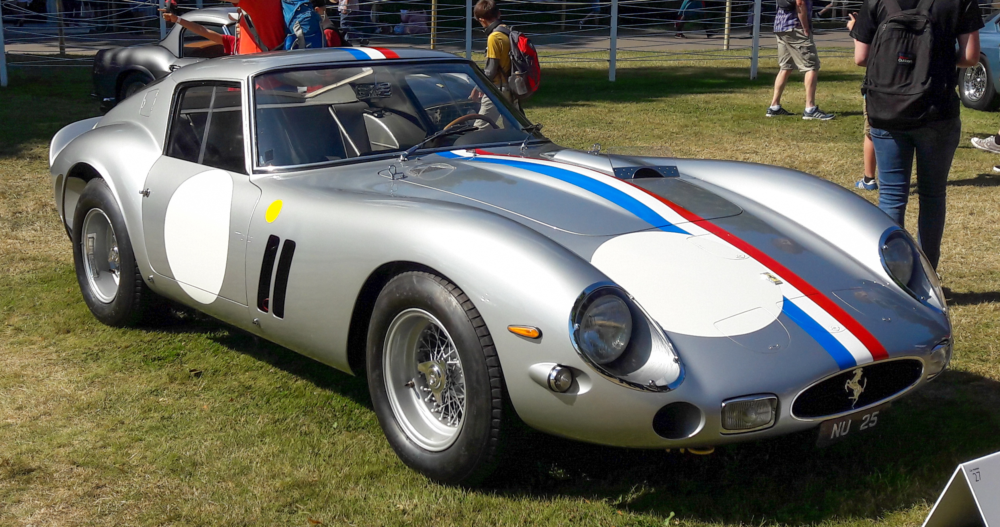
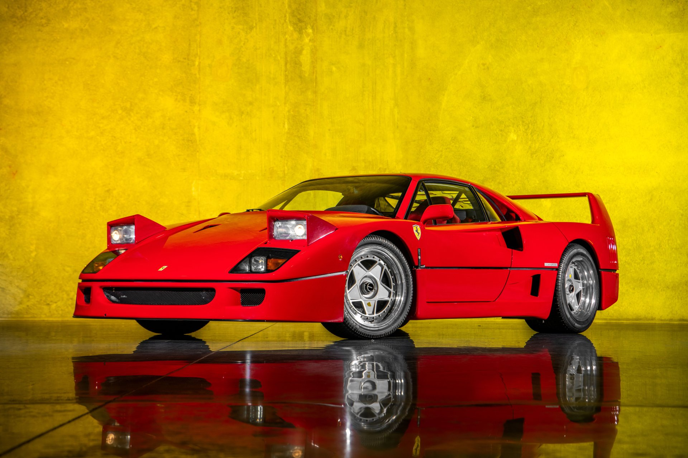
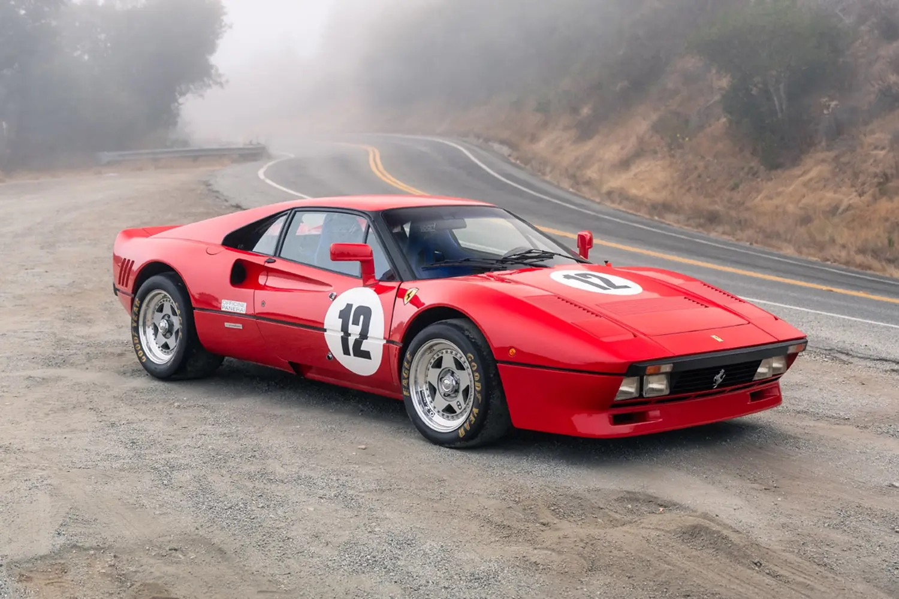
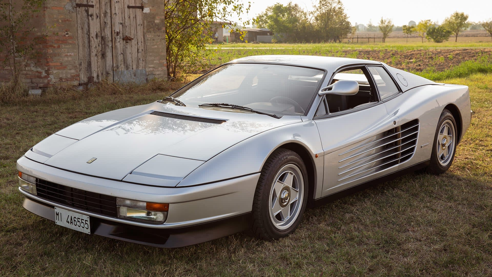
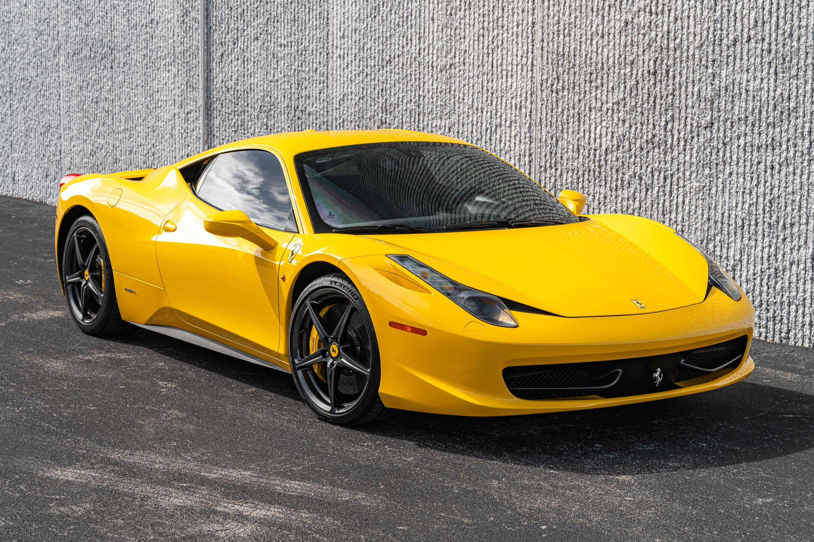
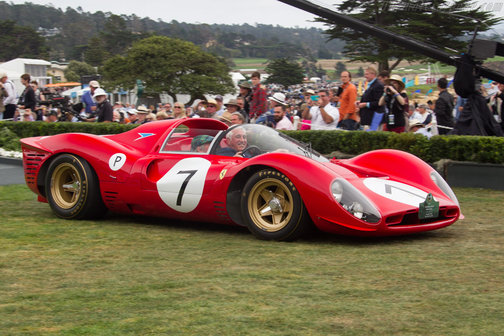
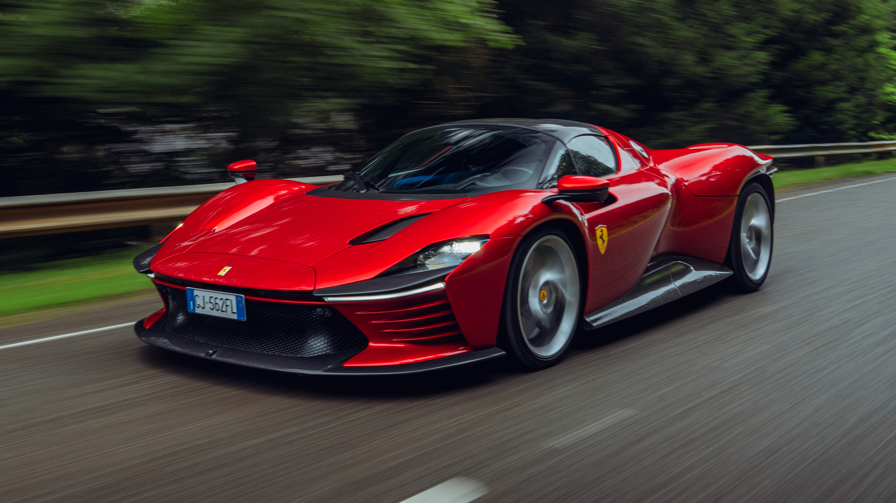
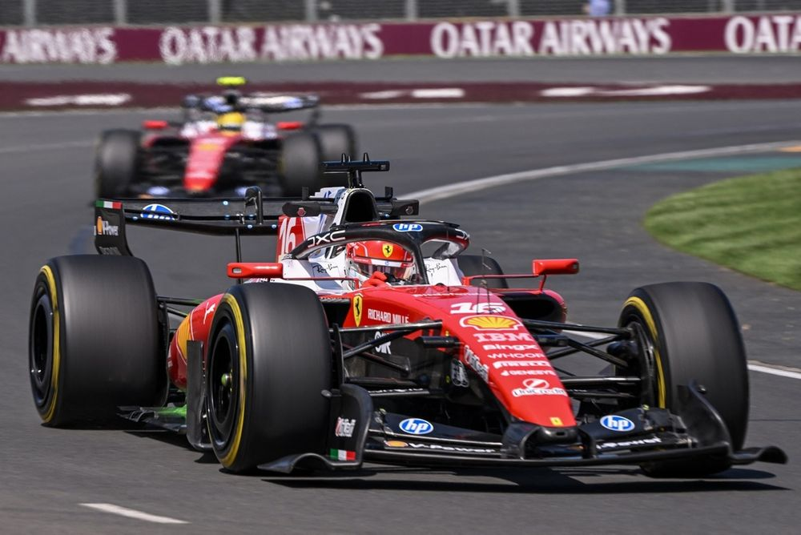
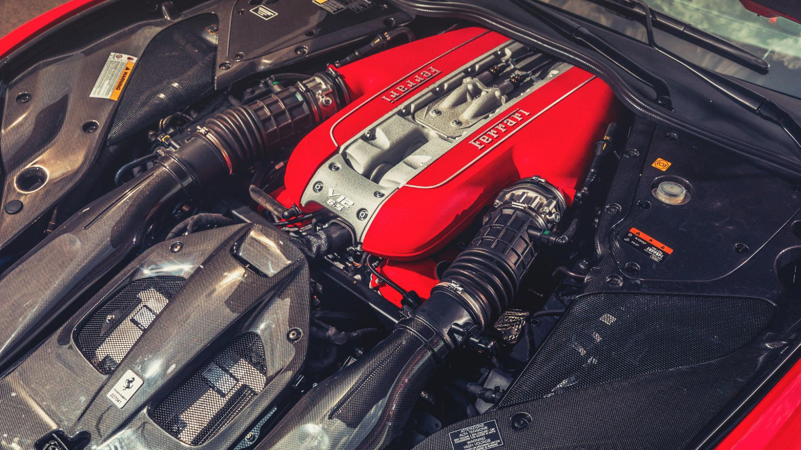
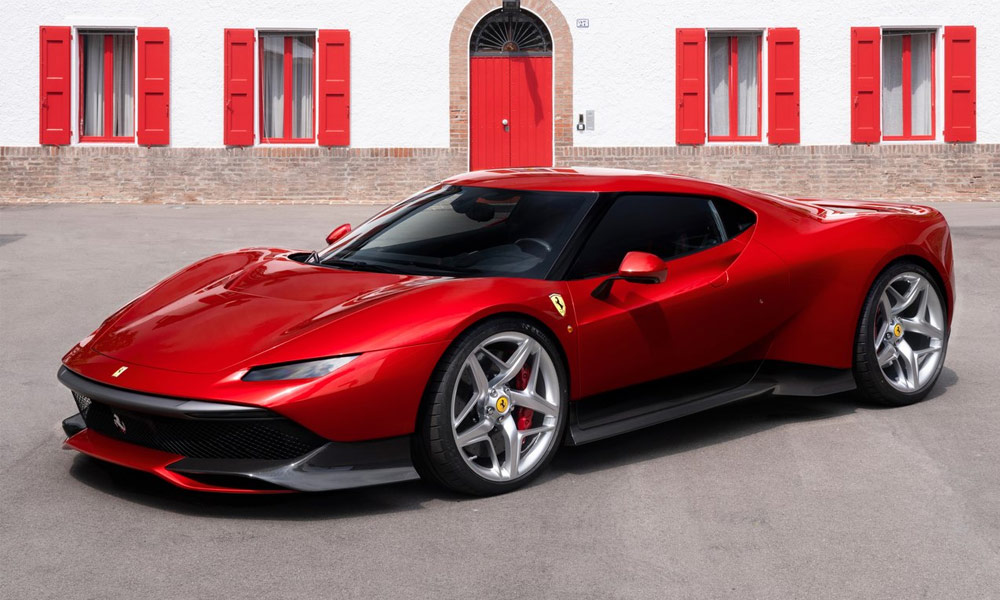

Ferrari
The Prancing Horse
Founded: 1939
Country: Italy
Icon: 250 GTO, F40
Racing Legend
The Prancing Horse
Ferrari is more than a car company – it's a legend. Founded by Enzo Ferrari, a man obsessed with racing, the company has become the most iconic sports car brand in history.
Enzo Ferrari began as a racing driver for Alfa Romeo in the 1920s. In 1929, he founded Scuderia Ferrari as a racing team for Alfa Romeo. The prancing horse logo came from Count Francesco Baracca, a WWI flying ace, whose mother suggested Enzo use it for good luck.
After World War II, Enzo finally built his own cars. The first Ferrari, the 125 S, debuted in 1947 with a 1.5L V12. Ferrari's road cars funded his true passion: racing. And race they did – Ferrari won its first Grand Prix in 1951 and its first Le Mans in 1949.
The 1950s and 1960s were Ferrari's golden age. The 250 series – especially the 250 GTO – are among the most beautiful and valuable cars ever. Ferrari dominated racing, winning Le Mans six times in the 1960s and Formula 1 championships.
In 1969, Fiat bought 50% of Ferrari, providing capital for expansion while Enzo retained control of racing. The 1980s brought the 288 GTO and F40 – the latter was Enzo's last car before his death in 1988. The F40 became the ultimate supercar.
The 1990s and 2000s saw Ferrari expand with the 355, 360, F430, and 458 – each refining the mid-engine V8 formula. The Enzo (2002) was a limited-edition flagship, followed by the LaFerrari (2013) hybrid hypercar.
Today, Ferrari is independent again, floated on the stock market in 2015. The range includes the 296 GTB, SF90 Stradale, Roma, Portofino, and the Purosangue SUV. Ferrari remains the most desirable car brand in the world.
"Aerodynamics are for people who can't build engines."- Enzo Ferrari

1962-1964
The most valuable car in the world. Only 36 built, the 250 GTO is the ultimate collector car – beautiful, successful in racing, and incredibly rare.

1987-1992
Enzo's last car. Raw, extreme, and beautiful. Twin-turbo V8, 471 hp, and 201 mph – the ultimate 1980s supercar.

2013-2016
The first Ferrari hybrid. 950 hp, F1-derived KERS, and stunning design. Limited to 499 units.

1984-1987
The first "supercar" from Ferrari. Homologation special for Group B rallying, with 400 hp and 189 mph top speed.

1984-1991
The 1980s icon. Wide body, side strakes, and flat-12 engine. The ultimate Miami Vice car.

2009-2015
The benchmark mid-engine V8 Ferrari. 562 hp, 9,000 rpm, and perfect handling. One of the best Ferraris ever.

1967
Le Mans legend. The beautiful 330 P4 finished 1-2-3 at Daytona in 1967, beating Ford's GT40.

2021-present
Limited edition Icona series. V12 mid-engine, 829 hp, inspired by 1960s sports prototypes.
Ferrari is the only team to have competed in every Formula 1 World Championship since 1950. Formula 1 is Ferrari's heart and soul.
The Schumacher era (1996-2006) was the most dominant in Ferrari history. With technical director Ross Brawn and designer Rory Byrne, Schumacher won five consecutive championships from 2000-2004. The F2002 and F2004 are among the most dominant F1 cars ever.

The V12 engine has always been Ferrari's signature. From the first 125 S to the current 812 Superfast, the V12 defines Ferrari's top models.
The V12 Ferraris are the purest expression of the brand – front-engine, rear-drive grand tourers with incredible power and beautiful sound.

Ferrari's special series cars are the ultimate expression of the brand – limited production, extreme performance, and collector status.
Each special series car pushes technology and design to the limit. They're the most desirable Ferraris for collectors.
